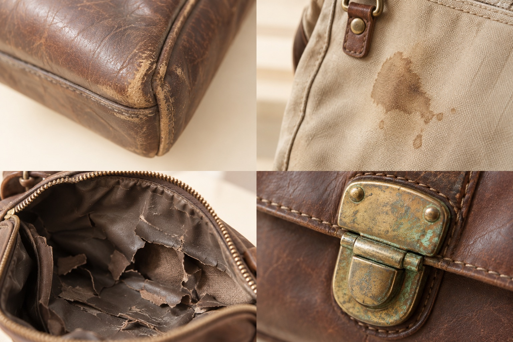

角スレ・キズ
使い込んだ角や表面も。
ブランド先生の出張買取
ご自宅でひとつずつ丁寧に査定。
売るかどうかは説明を聞いてから。ご自宅で、ひとつずつ丁寧に査定。
売るかどうかは、説明を聞いてから。
はじめての出張買取
お手持ちの品物について、気になることはなんでもお申し付けください
傷・汚れのあるお品物も
ベタつきやサビなど、気になる状態もそのままご相談ください。気になる状態も、そのままご相談ください。

使い込んだ角や表面も。
気になる汚れも、そのまま。
保管中の傷みもご相談を。
金具の状態も確認します。
買取実績
実際に査定・取引させて頂いた品物の例です
実際に査定・取引させて頂いた品物の例です
ブランドバッグ
角スレ・使用感あり
時計
付属品なし
アクセサリー
細かなキズあり
財布・小物
長期保管のお品物
過去の買取実績です。状態や付属品、相場によって査定額は変わります。状態や付属品、相場によって査定額は変わります。
大切なお品物の価値を
型番や素材、細かな仕様。お品物を知る手がかりを確かめます。
角スレや内側の傷みも。気になる箇所はそのままお知らせください。角スレや内側の傷みも。気になる箇所は、そのままお知らせください。
箱や保証書の有無も確認。金額とあわせて、査定の理由をお確かめください。
ご相談から査定まで
売るかどうかは、説明を聞いてから。
種類や状態を、わかる範囲でお知らせください。
訪問日時・費用・対応地域を、事前に確認します。
状態や金額の理由を確認。気になることもお尋ねください。状態や金額の理由を確認。
気になることも
お尋ねください。
説明を聞いてから、売るかどうかをご自身で決めます。
ご相談後の気持ち
バッグのご相談
傷んだ部分も丁寧に見てもらえて、査定前にまずは相談するという選択ができました。傷んだ部分も見てもらえて、まずは相談するという選択ができました。
はじめての出張買取
訪問前に流れを知り、説明を聞いてから売るかどうかを考えられるのがよかったです。訪問前に流れを知り、説明を聞いてから考えられるのがよかったです。
掲載用の想定コメントです。実際のお客様の口コミではありません。人物はAI生成イラストです。
Q & AQ&A
売却・費用・訪問について
もちろんです。ご相談の段階で売却を決める必要はありません。
査定内容を聞いてからご検討頂けます。迷っている場合も最初にお知らせください。費用やキャンセルの条件は、訪問前にご確認ください。ご相談の段階で、売却を決める必要はありません。査定内容を聞いてからご検討ください。迷っていることも、最初にお知らせください。費用やキャンセルの条件は、訪問前にご確認ください。
傷みがある箇所も、わかる範囲でお伝えください。買取の可否は品物の種類・状態などを確認して判断します。傷んでいるからと決めつけず、まずはご相談ください。
ご訪問の前に、対応地域と出張・査定・キャンセルにかかる費用をご案内します。条件を確認し、納得されてからご依頼ください。
まずは付属品の有無をお知らせください。種類によって確認事項や査定条件が異なるため、品物ごとにご案内します。見つかっている付属品は、一緒にご用意ください。
担当者が相談内容を確認し、連絡方法や訪問条件をご案内します。
ご相談フォーム
この操作はデモです。内容は送信されません。
入力内容は送信・保存されていません。実際の申し込みや訪問予約は成立していません。